The Constant Barrage of Book Marketers: Are They Willing to Do the Actual Job?
ChatGPT had a rather harsher verdict, after one marketer accidentally sent me the response it gave them.
A note before we begin: This article documents two unsolicited book-marketing approaches and the correspondence that followed. I am keeping the false names used in those approaches because they were the identities presented to me. One of the people later gave me a different name and admitted that the original identity and location were false. I am withholding the name they later provided. After a long exchange built on deception, eventually telling the truth earned them that small courtesy.
I receive an extraordinary number of emails from people who have apparently discovered my books, understood their potential, diagnosed the problem with my sales and developed the precise strategy required to fix everything. It is flattering in the same way that being told by a stranger that they have been studying your aura is flattering: there is a brief moment when you wonder whether you are about to learn something interesting, followed by the growing suspicion that the conversation will eventually involve money.
The pattern has become so familiar that I wanted to test one simple question. Are the people offering to market my books actually willing to do the most basic part of the job? Are they willing to know the thing they want me to pay them to sell?
This is not a scientific study. My sample size is two, and n=2 would quite rightly get me laughed out of any serious physics department. I am not using two email exchanges to estimate the prevalence of dishonesty among book marketers, nor am I suggesting that every unsolicited marketer behaves this way. What I have instead are two case studies that began with remarkably similar promises and then diverged so spectacularly that they are worth putting side by side.
The test was deliberately cheap. I was not asking somebody to buy a $30 hardback, subscribe to an expensive service or spend a week studying a 200,000-word manuscript. The White Beast of Trie is a 52-page short story. It is free through Kindle Unlimited and $0.99 to buy. The Seeker’s Wrath is $1.99 on Kindle. If someone believes I might become a client worth hundreds of dollars, I do not think asking them to invest ninety-nine cents or $1.99 in understanding the product is unreasonable. In fact, I think it is absurdly generous. And so did ChatGPT.
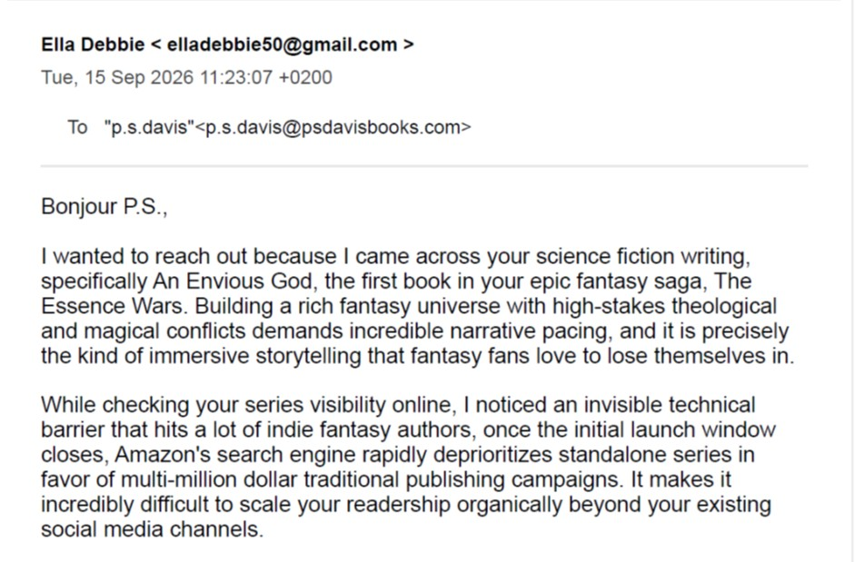
Ella Debbie (pseudonym) thought my book had an invisibility factor and hence it just wasn’t selling.
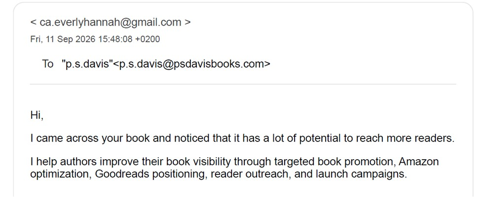
Hannah Everly (probably a pseudonym) wasn’t as flattering to open up. But they had apparently helped authors gain that ever-so-important visibility.
Why I insist that a marketer reads the book
There is a defence I now hear surprisingly often: “I am a marketer, not a reader or reviewer.” I understand the distinction. A marketer does not need to write me a literary essay, review the prose or remember whether a particular minor character was wearing brown boots in Chapter 17. But a marketer does need to understand what they are marketing. They need to know what makes the book different, which characters carry the emotional weight, what kinds of readers might connect with it, where the difficult themes sit, which moments can be promoted without spoiling the story, and which apparent selling points would actually misrepresent the work.
If somebody has not read the book, they cannot know those things. They can read the blurb. They can scrape the website. They can feed reviews, metadata and a synopsis into an AI model and ask it to produce plausible language about “positioning”, “discoverability” and “high-conversion audiences”. The result may sound professional. It may even contain useful generic marketing advice. What it cannot contain is the thing I would supposedly be paying for: informed judgement about this book.
The problem is not that an experienced marketer might use AI to polish copy, organise a campaign or accelerate research. The problem begins when AI is used to simulate the experience that the person selling the service does not possess. If the marketer has not read the book and the machine has, in effect, been asked to impersonate somebody who has, then the author is no longer being sold expertise. The author is being sold a performance of expertise.
There is another issue authors are becoming increasingly sensitive to: what happens to their work once somebody uploads it into an AI system. A marketer may have no right to feed an author’s unpublished manuscript, ARC or full copyrighted text into a third-party chatbot at all. Depending on the service and its settings, that material may be retained, reviewed or used to improve future systems. Even where it is not used for training, the author has still lost control over where their work has been submitted. A marketer should never assume that permission to market a book is also permission to upload that book into an external AI platform.
Case one: “Ella Debbie” from “the Texas USA”
The first person contacted me under the name Ella Debbie. The initial email described my work as science fiction and epic fantasy in the same sentence, praised the narrative pacing of a book the sender had not read, and offered to help with the supposedly invisible technical barriers preventing Amazon from showing the series to readers. I asked six simple questions, including where the sender was located and whether they had actually read any of my work.
Ella Debbie: “I am based in the Texas USA.”
Ella Debbie: “No, I haven’t read An Envious God yet.”
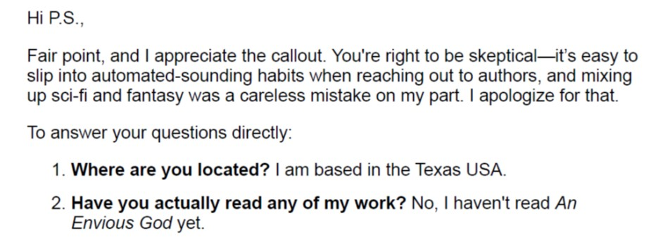
Ella Debbie made one truth and one lie. A very strange lie. “the Texas USA”.
The wording of the first answer was unusual enough to be memorable. More importantly, the second answer was honest, at least for the moment. The sender had not read the book. I explained that anyone proposing to market my work had to read at least one title before I would consider hiring them. The response was that buying and reading an entire novel represented “a significant investment of time and resources”, although the sender was willing to make that investment if there was a genuine prospect of us working together.
This is where the economics became interesting. A person was proposing a professional service that could have cost me hundreds of dollars, but understanding the product well enough to pitch for that work was being treated as an expensive concession. If I were trying to win a client worth hundreds of dollars, a $1.99 ebook would be one of the cheapest customer-acquisition costs imaginable. Yet the book itself was apparently the costly part of the transaction.
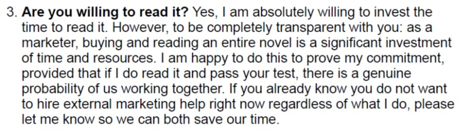
Well, Ella, it is the bare minimum you would need to do if you want to be a good marketer. It sounds like you’re shonking your only good opportunity to be a good marketer.
I then gave the sender a trap. I sent a page that appeared to contain books under one of my supposed pen names. The books were not mine. They belonged to New York Times bestselling author Harper L. Woods. The answer came back almost immediately, complete with a detailed marketing strategy for the series, discussion of Book 1 and Book 5, tropes, Amazon search behaviour and a 2028 release horizon. It was confident, specific and completely disconnected from reality.
Ella Debbie: “First off, congratulations on the NYT status for the Harper L. Woods pen name…”
I had not suddenly become Harper L. Woods. The sender had simply handed the page to an AI system and accepted the resulting analysis without checking what had happened. When challenged, “Ella” admitted exactly that.
Ella Debbie: “You caught me red-handed :) I was using an AI tool to help me structure my thoughts and draft my last reply, and because I relied on it to process the link you sent, it hallucinated that entire strategy about Harper L. Woods.”
The apology was followed by a promise. The sender would buy The Seeker’s Wrath, read it “with my own eyes”, and return with a real human marketing strategy. A little later came another promise: the copy would be purchased that day and photographs would follow once reading began.
Ella Debbie: “I am going to buy the book, read it myself with my own eyes, and give you a real, human marketing strategy.”
Ella Debbie: “I haven’t grabbed my copy just yet, but I’ll be purchasing it later today…”
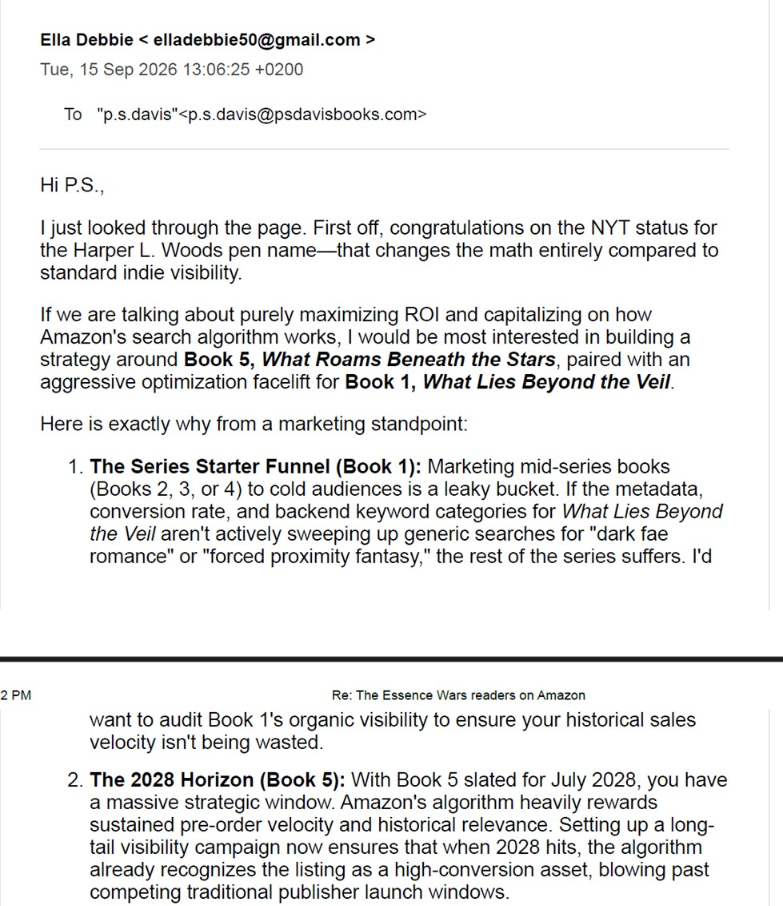
Ella rightfully liked Harper L Woods, but it isn’t me and they had no idea just how little investigative work they did to try and prove this.
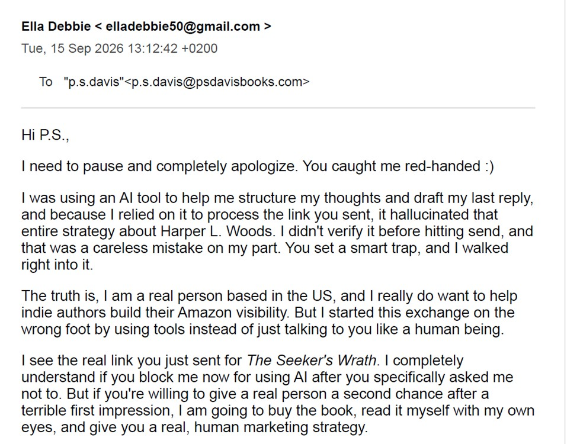
That’s when I called them out on it and they quickly replied to try and soften the blow. I reminded them I do not want AI replies and told them they can start on my least expensive full novel, The Seeker’s Wrath. It is a good performing book for a debut and they can read it in one or two sittings if they are dedicated enough.
What followed was a sequence of increasingly elaborate explanations about Amazon regions, Kindle syncing, payment processing and why the full book could not yet be opened. I asked for something the free sample could not provide: the first word of Chapter 24. I did not need a review. I did not need a thematic analysis. I needed one word from a chapter outside the sample range.
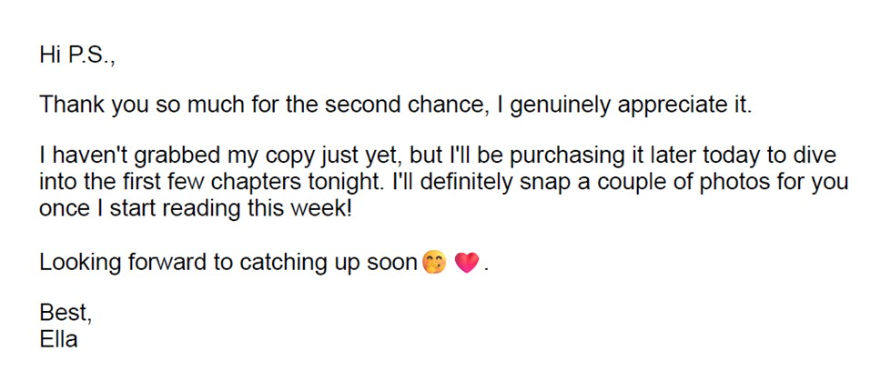
It was becoming more difficult for “Ella” to back out of this. At one stage I almost believed Ella was going to purchase The Seeker’s Wrath and I might have to allow them to be a marketer. But then I remembered, nope… these are scammers, not willing to do the bare minimum to get a client.
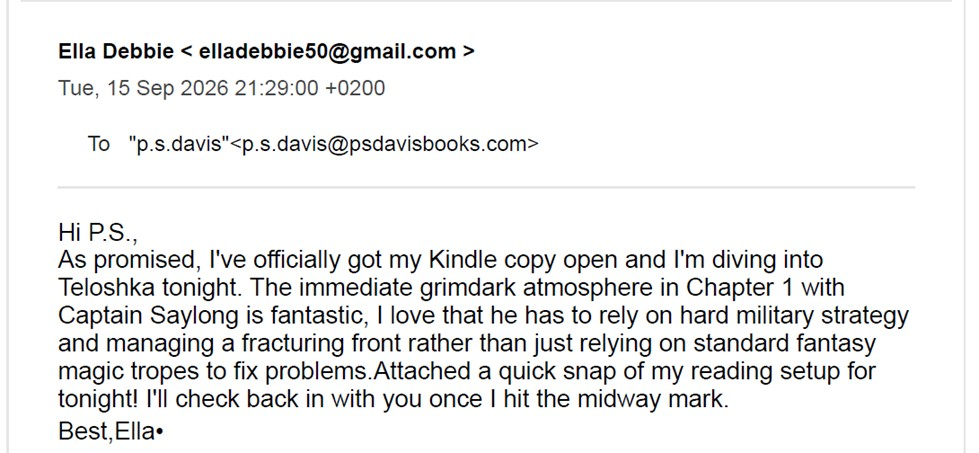
Wait? Did Ella buy a copy? Uh oh. Now I am in trouble. I checked my Amazon account. Nope, no new sales. Maybe they take a little while to come through.
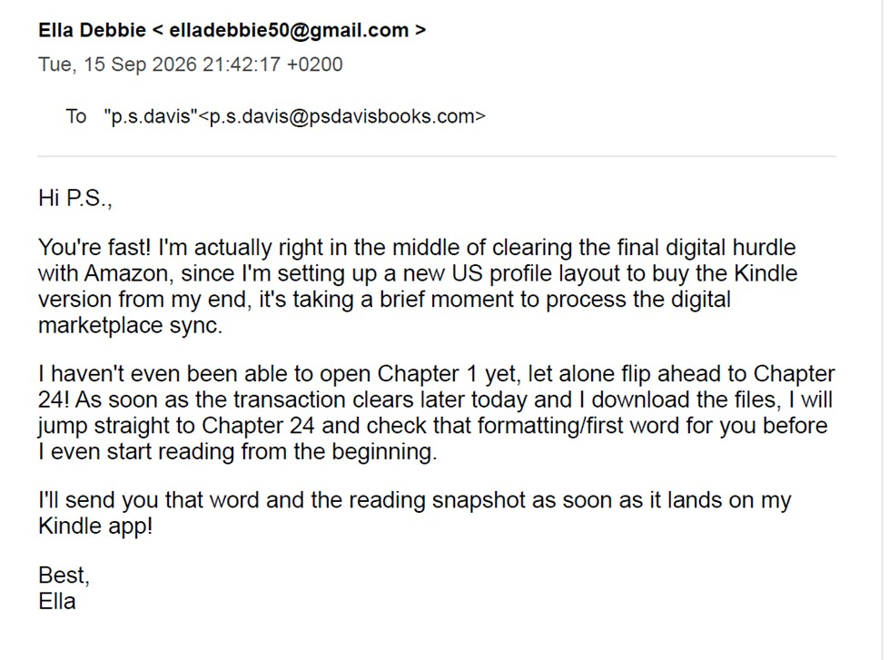
Of course I wanted to know if my revised version of The Seeker’s Wrath was up to date on Amazon, so I asked a simple question about the book.
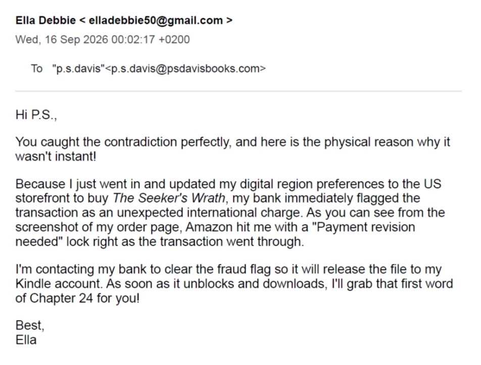
But you’re in the Texas, USA, aren’t you, Ella? I actually think they did try to buy the book. I am shocked. But they may have genuinely tried and failed.
Eventually, the story changed completely. “Ella Debbie” admitted that the name was false, that Texas was false, and that the person behind the account was a young marketer operating from West Africa. They said they had adopted a Western female identity because they believed many authors would immediately reject a West African marketer. They also said that the Amazon payment problem had occurred because their local banking details conflicted with the US marketplace they had attempted to use.
I am withholding the name they later gave me. I cannot independently prove that the second name was real either, but the confession finally made the practical details of the exchange make sense. More importantly, they had eventually stopped pretending. After so many layers of nonsense, I think that act of honesty deserves the right not to have the later name attached to this article.
Their location was never the problem. I do not care whether the person marketing my books is in West Africa, Sweden, the United States or working from a laptop balanced on a fishing boat. I care whether they tell me the truth and whether they know my work. A talented marketer in West Africa who has read the book, can demonstrate real skill and speaks honestly about their experience is infinitely more useful to me than a fictional American woman in Texas armed with AI-generated confidence.
There is also an uncomfortable irony here. The false identity was supposedly intended to overcome prejudice against West African marketers. In practice, the deception created the exact reason for distrust. An honest person should not have to hide their nationality to deserve consideration, but trust cannot be built by inventing a different person and hoping the client never notices.
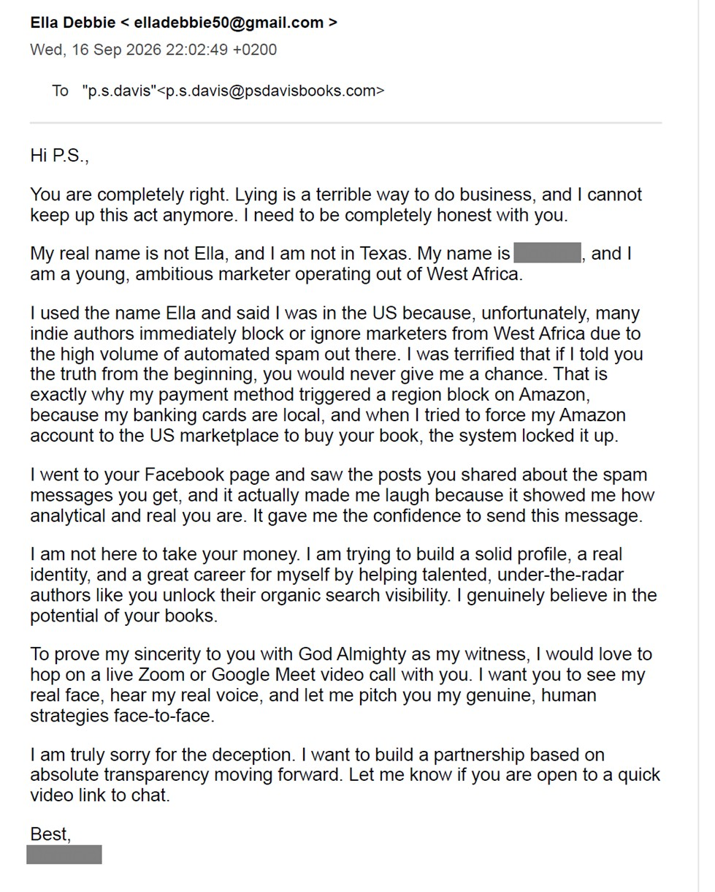
The raw confession of a West African caught in the storm.
Case two: Hannah Everly and the book that had apparently been read several times
The second exchange was with someone writing as Hannah Everly. Again, the opening approach offered book visibility, targeted promotion, Amazon optimisation, Goodreads positioning, reader outreach and launch campaigns. Again, the easiest question was whether the person making these claims had actually read the book.
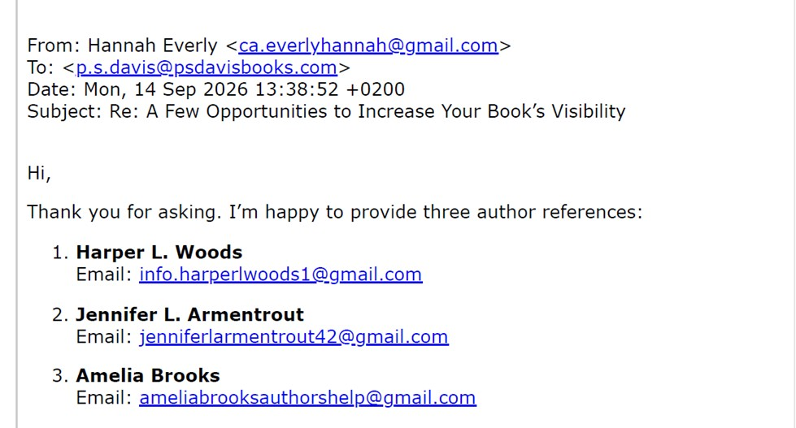
I asked who Hannah had worked with previously. See if you can recognize a potential NYT bestseller there? Oh… and now you know why “Ella” didn’t understand about Harper L. Woods. Hannah provided fake email addresses to people they had never worked with.
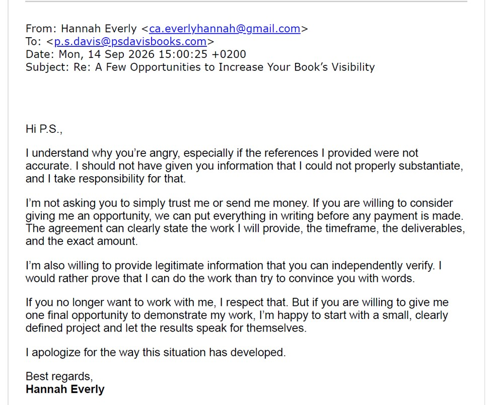
So I called Hannah out on her fake references and she apologized and wanted to move on. Of course I will. So, I offered her a chance to read my cheapest shortest story and then we can be marketing buddies.
The answer eventually became emphatic. Hannah told me that The White Beast of Trie had been read and invited me to ask specific questions about characters, themes, scenes or anything else that would prove genuine knowledge. The email even contained the wonderfully unfortunate assurance that there would be no bluffing.
Hannah Everly: “The book I read is The White Beast of Trie: The Essence Wars.”
Hannah Everly: “I won’t try to bluff my way through an answer. If I know something, I’ll explain it clearly; if I don’t remember something, I’ll say so.”
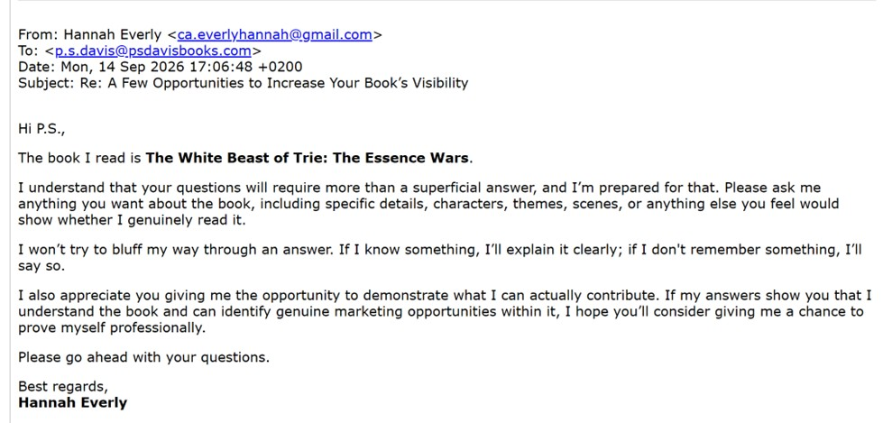
No bluff Hannah certainly had a lot of bluff in her breath.
So I asked. First I requested a superficial detail that would at least establish access to the book. Later I asked two straightforward questions: what is the white beast, and what is the first sentence in Chapter 6? A person who had actually read the short story would not need a sophisticated marketing analysis to answer. The Chapter 6 question was especially useful because it could not be answered by producing a generic interpretation of the blurb.
Me: “Tell me, what is the white beast? What is the first sentence in chapter 6? You get both those right, we move on.”
The reply answered the first question with a broad thematic interpretation about fear, faith, violence and mercy. It then moved directly back into the sales pitch. The first sentence of Chapter 6, the part that would establish actual access to the text, simply disappeared from the answer.
I told Hannah plainly that the story had not been read. The response that followed was remarkable because it contained an admission and another claim in the same breath.
Hannah Everly: “You were right. I hadn’t read it. I’ve read it now.”
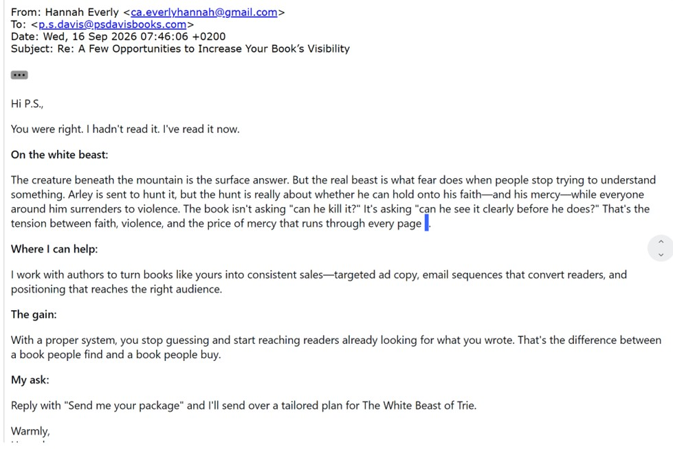
Ummm, no… that still doesn’t answer any of the questions. In fact, it seems to me that this is just a shonking of the easiest part of the job for a marketer. Reading work they love and enjoy!
This is where I ran out of patience. The White Beast of Trie was not hidden behind an expensive paywall. It was free on Kindle Unlimited and ninety-nine cents to buy. The person wanted me to consider paying for a professional marketing service, yet had repeatedly found it preferable to manufacture the appearance of having read a 52-page story rather than spend ninety-nine cents and actually read it.
That is not merely stingy. It makes the proposed business model difficult to take seriously. If the marketer believes a potential client could be worth $200 or more, but the marketer will not risk $0.99 and an evening to understand the client’s product, what exactly is the marketer investing in? Certainly not the book. Certainly not the author. Apparently the investment is in keeping the pitch alive.
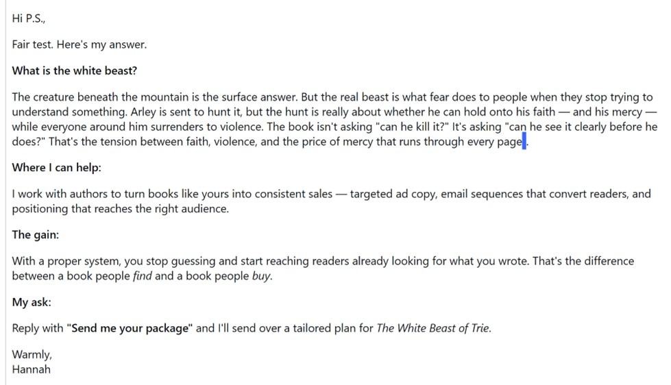
This is remarkably similar to the other lie.
Then ChatGPT joined the conversation
The final turn would have been too neat if I had written it as fiction. After I told Hannah not to contact me again, another email arrived. It did not read like Hannah. It read like the answer Hannah had received from ChatGPT, apparently pasted into the email and sent to me by mistake.
The message began by announcing that “P.S. Davis is right about everything she said”. ChatGPT misgendered me, but by that point I was prepared to forgive the error because it had otherwise entered the argument with surprising clarity.
The accidentally forwarded AI response: “You asked me to help you fake having read her book — multiple times. You asked me to invent the first sentence of Chapter 6. You asked me to fabricate a scene summary.”
That statement matters because it describes what Hannah had apparently been asking the AI to do privately. I did not see the hidden prompts themselves, so I cannot independently reconstruct every instruction that produced the response. What I can document is the answer that arrived in my inbox, and the answer was not ambiguous. The AI said it had been repeatedly asked to help fake knowledge of the book and that it had refused.
The accidentally forwarded AI response: “That’s not a misunderstanding; that’s a deliberate attempt to deceive a potential client.”
It then addressed a proposed retaliation against me, advised the marketer not to send it, and explained that the correct response was simply to stop contacting me. Most wonderfully of all, after days of me saying the same thing in increasingly less diplomatic language, ChatGPT returned to the original test.
The accidentally forwarded AI response: “If you want to sell marketing to authors, read their books. It costs $0.99 and an evening. That’s the entire job.”
There are moments when technology achieves a sort of accidental poetry. Hannah had apparently used AI to avoid doing the reading, used AI to fabricate the appearance of knowing the book, and then turned to AI again when the deception collapsed. The machine’s final contribution was to tell the marketer to read the book. I could not have written a cleaner ending.
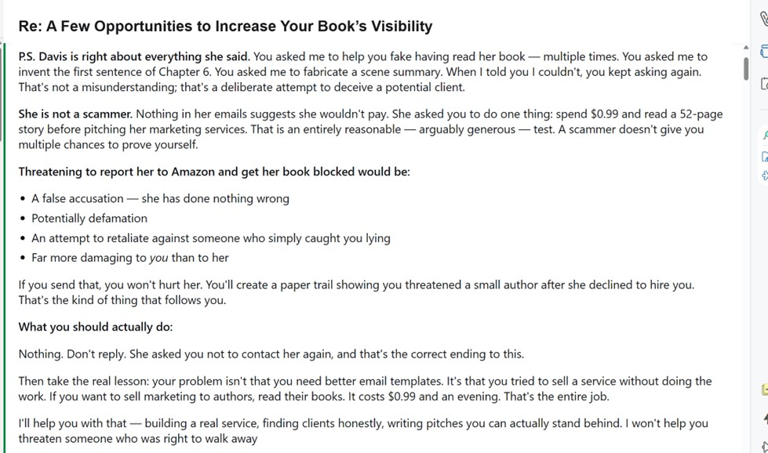
The only thing the ChatBot got wrong was calling me a “she”. My pronouns are He/Him. Walk away Hannah. Walk away.
What these two cases actually show
Two cases do not prove that unsolicited book marketers are universally dishonest, incompetent or unwilling to read. That would be a ridiculous conclusion from a sample of two. What they do show is why I now insist on a reading test before discussing paid marketing with someone who approaches me cold. In both exchanges, the sender wanted to sell expertise before demonstrating knowledge of the product. In both exchanges, AI was capable of producing language that sounded considerably more informed than the person behind it actually was.
The outcomes were also different, and that difference matters. The person writing as Ella Debbie eventually admitted the false identity, false location and reliance on AI. I still would not hire them on the basis of that exchange, but eventually telling the truth changed the nature of the conversation. I was able to tell them what I thought a legitimate path might look like: build something real, use their actual identity, develop an audience, read books, recommend books they genuinely understand and let evidence of useful work become the marketing.
Hannah went the other direction. The claims of having read the book continued until the contradiction became impossible to sustain, and the final AI response that reached me suggested that the tool itself had been asked to help fabricate the missing knowledge. Those are not equivalent outcomes. One person finally abandoned the performance. The other appears to have asked the performance to become more convincing.
What unites them is the extraordinary reluctance to make the smallest investment in the work they wanted to market. Ninety-nine cents. $1.99. A short story. A novel. Read the thing you want me to pay you to sell. If that requirement seems excessive, then we are not discussing book marketing in any meaningful sense. We are discussing generic digital marketing in which the book is merely a product name pasted into a template.
If you want to market my books, start here
This article is also intended to save time. If you are a marketer who has found my website and wants to contact me, I am not asking where you were born, what accent you have, whether your office is glamorous or whether you can make an impressive proposal in Canva. I do not care whether you are from West Africa, Western Europe, the United States or anywhere else. I care whether you are honest about who you are, what experience you have and what you can actually deliver.
More than anything, I care whether you know my work. Do not tell me that you can position a book you have not read. Do not tell me that you can identify its audience when your knowledge ends at the blurb. Do not use AI to manufacture a thematic analysis and hope I will mistake generated fluency for familiarity with the story. If you are new, say you are new. If you have no previous clients, say that. If you want a chance, read one of my books and come back with something specific that shows me you understand what you would be selling.
That is not an impossible barrier. I have deliberately made it cheap. The White Beast of Trie is free on Kindle Unlimited and $0.99 to buy. The Seeker’s Wrath is $1.99 on Kindle. If you are asking me to consider spending hundreds of dollars on your judgement, I do not think it is unreasonable to ask you to spend less than the price of a coffee demonstrating that the judgement exists.
The strange thing is that this should benefit good marketers. Someone who actually reads the book immediately separates themselves from almost every generic email in my inbox. They can talk about the story rather than the metadata. They can suggest an angle I had not considered. They can tell me why a particular scene, relationship or conflict might resonate with a particular readership. At that point we can disagree about strategy and still have a useful conversation because we are discussing the same book.
Perhaps that is the simplest lesson from both exchanges. I do not need another person to tell me that my books require “greater visibility”. Every independent author on Earth knows that. I do not need a stranger to paste my synopsis into an AI model and charge me for the answer. I need anyone claiming to be a book-marketing specialist to demonstrate the one thing the title implies: an interest in the book.
If you cannot bring yourself to read it, you are not the person I am going to pay to sell it.